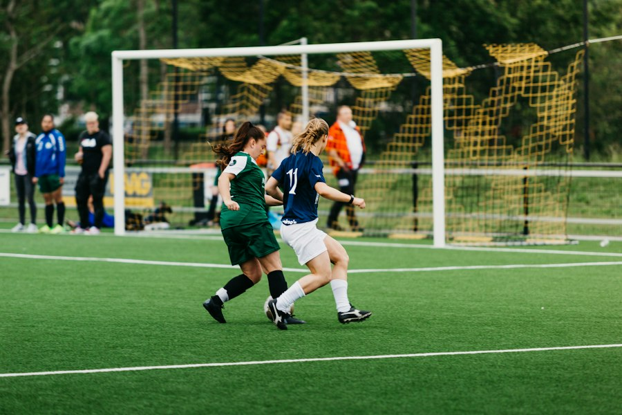
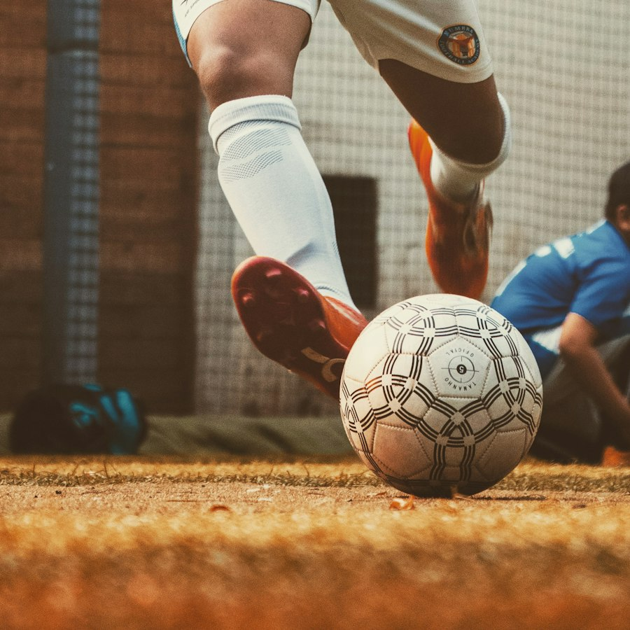
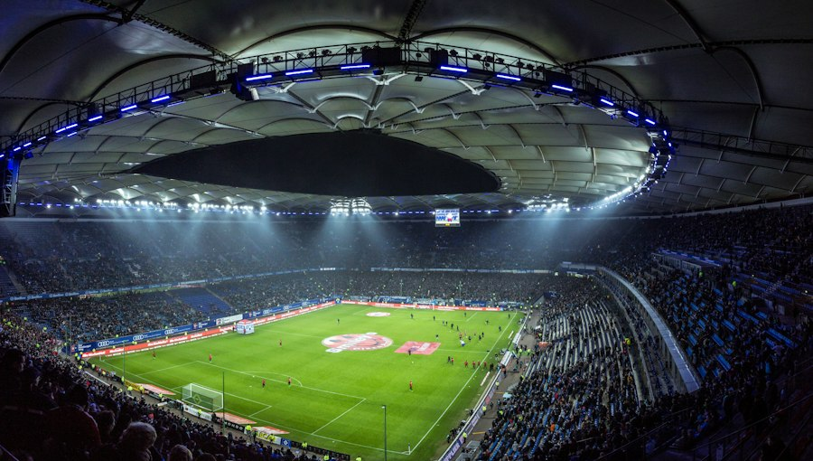

Escolinha de futebol para alunos de 4 a 16 anos — treinos que ensinam técnica dentro de campo e valores para fora dele. Times que competem de verdade.
Turmas divididas por faixa etária — treino adequado ao desenvolvimento de cada fase.

Primeiros contatos com a bola: coordenação, brincadeiras com propósito e amor pelo jogo.

Técnica individual, primeiro toque, passe e finalização — com muita diversão.
Tático, físico e mental: treinos avançados e times para competições oficiais.
Há 16 anos transformando jovens através do esporte — com estrutura de treino e olhar de educação.
Fundamentos do futebol adaptados a cada idade: controle, passe, drible e finalização.
Leitura de jogo e decisão — entender o porquê de cada movimento.
Respeito, disciplina e trabalho em equipe que valem dentro e fora do campo.
Times que disputam campeonatos: aplicar o treino em jogo de verdade.
Somos de Rio Preto, conhecemos cada aluno pelo nome e acompanhamos a evolução de cada um — dentro e fora das quatro linhas.

Nossas equipes disputam partidas oficiais — o palco onde o aluno vê sua evolução.
Intersport x Desportivo Rio Preto
Gols de Joaquim, Davi, Rodrigo e mais — vitória com autoridade.
Sub-7 ao Sub-16
Equipes em todas as faixas etárias disputando calendário regular.
Aula experimental, turmas de 4 a 16 anos e toda a estrutura de uma escola com 16 anos de tradição.
Aula experimental sem compromisso